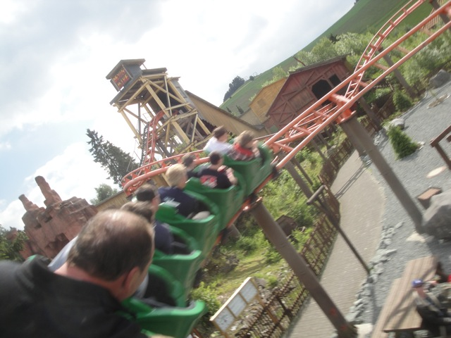
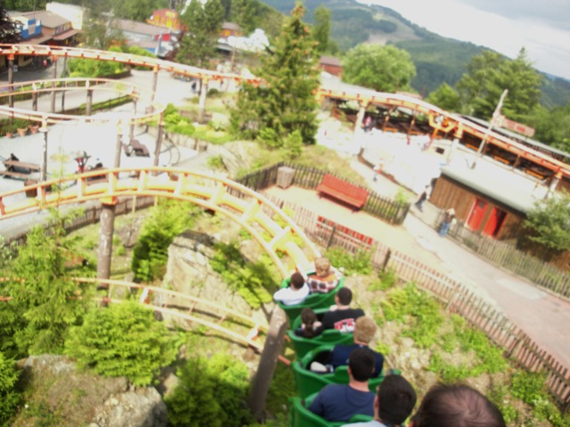

| |
Devil's Mine Review

We're here at Fort Fun where's we'll be revewing their Roller Skater. Devil's Mine. Now, when I say Roller Skater, I'm being very generous as while it's a similar ride, it's a completely custom layout that doesn't really ride like a roller skater. Granted, it is super fun and just really good. So it's just a ton of fun to ride. And to get to the ride, you have to go through what is without a doubt, the coolest line of all time. No, I'm dead serious. This isn't just an ordinary line. Nope this line is a f*cking fun house. Complete with moving sidewalks, crazy stairs, and spinning poles to make innapropriate gestures with. It's just an absolute blast. Eventually, you reach the train after going through all the fun house madness, and we're off. I never thought I'd have to worry about the line being better than the actual ride. Anyways, we go and go through this dark ride section, with lots of fun theming and signs saying that we're going to hell before we eventually climb a small little lifthill. We head outside and head down a small drop. In the front, it just slugs down, but in the back, there's actually a nice little pop of airtime. So hint. Ride in the back of this ride. After that fun little drop, we sort of just meander around a bunch of curves. We then curve and drop to the ground before heading straight into an upward helix. You know, it may not be intense, but I'm enjoying this. We then go from there and head into...another lifthill? Yep, there's a lifthill here. You know when you're playing RCT and there's not enough speed to make it up the hill, so instead of redesigning the ride, you just add a tiny little lifthill? Yep, that's exactly what they did here. So yeah. We then head down another drop as we dip underneath a bridge and hop up above to the ground, gaining another little pop of airtime. Yeah, I really like this. We head inside, go around another turn, and then we just sort of snake and meander on the ground until we turn into the station. Man, all I have to say is that this is not like any Roller Skater I can think of. It's not even like any kiddy coaster I can think of. Can I even call this a kiddy coaster? Yeah, it's starting to get into that blurred and fuzzy line. Either way, it's a really fun ride and while this isn't saying much at Fort Fun, my favorite coaster in the park (Alpine Coasters DON'T COUNT!!!).
5/10
Location: Fort Fun
Opened at Planet FunFun in 1991
Relocated to Fort Fun in 1996
Built by: Vekoma
Last Ridden: June 26, 2012
Devil's Mine Photos





|